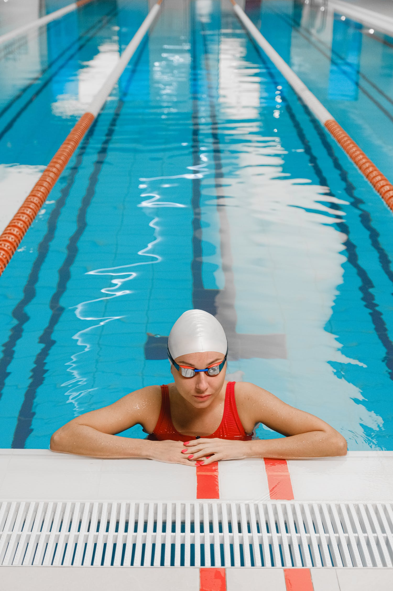

 La nadadora
22/11/21
La natación se trata de un deporte además de recreativo muy beneficioso para el ser humano, ya que al ser principalmente un ejercicio aeróbico, la natación reduce los efectos dañinos del estrés, puede mejorar y corregir la postura y desarrollar un físico característico, a menudo llamada "silueta de nadador".